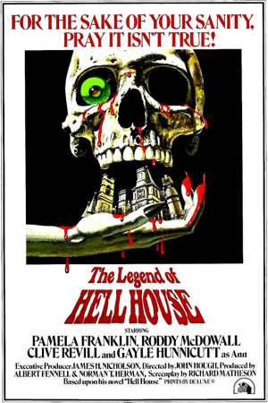

Hell House
It seems odd for a town as picture-perfect as Urbana to be home to the legend of Hell House. It stands on Clark Road, partially burned and derelict. Supposedly the man who was building it finished it shortly after his wife and children died in a train accident. Later on he hung himself from a large oak tree in the front yard. Strange noises are heard there now, and the builder himself sometimes appears hanging from the old oak tree.

Back